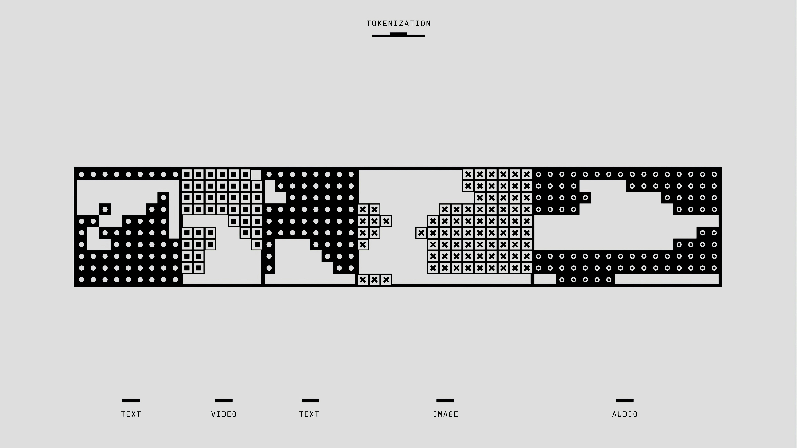
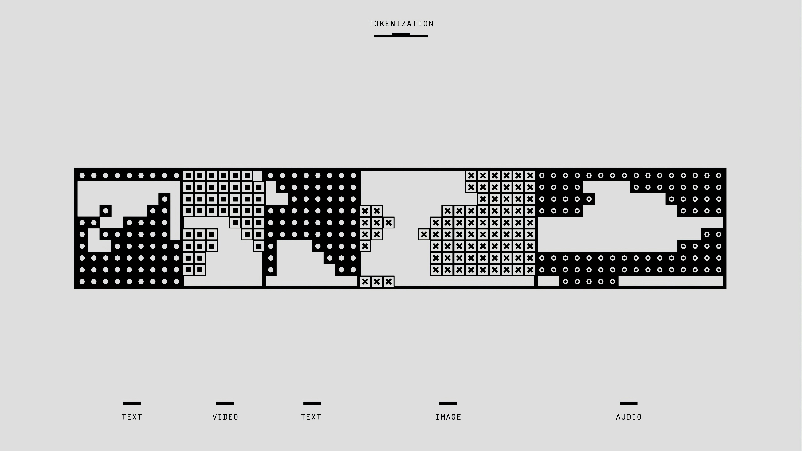

Short Story
The clockmaker's Apprentice
In a quiet mountain village nestled between the pines, lived an old
clockmaker named Mr. Harwin. Known for his intricate timepieces,
Harwin was respected but solitary—his shop filled with ticking
marvels and stories never told. One morning, a boy named Eli, with
smudged glasses and an insatiable curiosity, knocked on his door.
“I want to learn how to fix time,” Eli said.
Harwin chuckled. “You mean build clocks?”
“No,” Eli replied. “Fix time. Make it count.”
Amused, Harwin accepted him as an apprentice. Day after day, Eli
learned to carve gears, align springs, and listen—not just to the
ticks of clocks, but to the rhythm of life. At first, his hands
trembled. He broke more than he fixed. But Harwin never scolded him.
“Precision grows from patience,” he’d say.